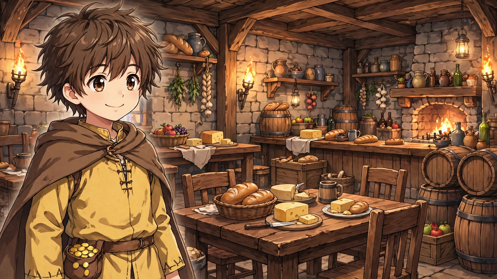

A Grande Feira da Escola
Prepare-se para administrar suas moedas e conquistar o seu espaço na feira!
Ir para o Episódio 1: Cadê meu troco? ➔
"Meu nome é Logan e sou o Descobridor do Dinheiro! O Mago Matemagicamente me deu 50 moedas de ouro... mas agora fica a pergunta: o que vamos fazer com isso?"
Torre do Mago • Matemagicamente
Prepare-se para administrar suas moedas e conquistar o seu espaço na feira!
Ir para o Episódio 1: Cadê meu troco? ➔